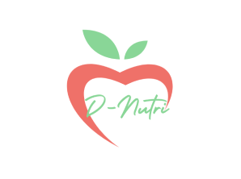
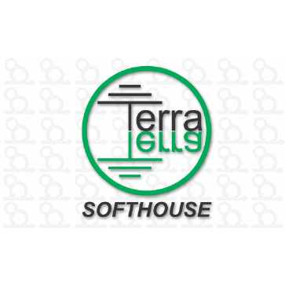

Juliana M. Manso
Hello, welcome to my profile. My name is Juliana, and I have ten years of experience in the financial sector (focused on treasury). I decided to transition my career to the technology field. Currently, I'm studying Multiplatform Software Development at FATEC Jacareí-SP, with an expected graduation date of December 2025.
Academic Projects
D-Nutri
Devs Domain (2nd semester/2024):
✯ The proposed challenge was to specify and build a mobile application that allows users to record and monitor their daily intake of calories and nutrients, helping them control their diet and maintain their health.
✯ In this project, I worked as a developer and Product Owner. I handled the Sprint Backlog, Product Backlog, user stories, functional and non-functional requirements, splash screen, back-end, front-end, and navigation between the "Start," "Sign Up," and "Login" screens. I also developed the back-end logic for tracking water intake, as well as the back-end and front-end for calculating and monitoring the user's BMI and BMR.
✯ Technologies used: TypeScript, React Native, HTML, CSS, MongoDB, Postgres, Node.js, Jira, Git, and GitHub.
D-Tracker
Devs Domain Team (1st semester/2024):
✯ üèÜ The project was the winner of the competition among all the classes of the DSM course at FATEC in Jacare√≠, It involved developing a management tool exclusively for the project manager, allowing them to oversee data provided by editors and reviewers. The system enables the manager to define the project area, upload supporting data, register users (editors and reviewers), assign work areas, and extract statistics. This tool aims to improve the efficiency and quality of mapping projects by centralizing the management of data provided by collaborators involved in the process.
✯ In this project, I worked on both the back-end and front-end, developing the "My Projects" screen. I contributed to the design and responsiveness of the login screen, created the sidebar navigation, and implemented the corresponding navigation links. Additionally, I developed the project filtering feature with visualization on the Dashboard, including the pie chart and "New Tasks" cards.
✯ Technologies used: TypeScript, React, HTML, CSS, MongoDB, Node.js, Git, and GitHub.
Bike4You

Devs Domain Team (2nd semester/2023):
✯ Development of a peer-to-peer web application to connect bicycle owners with potential renters. The application acts solely as an intermediary between the parties, without any payment responsibility.
✯ In this project, I was responsible for mapping the relational database and primarily worked on the front-end, developing the account management page. I also contributed to the check-up and final adjustments to ensure the responsiveness of all pages, maintaining the overall visual standard of the project.
✯ Technologies used: TypeScript, PostgreSQL, React, HTML, Node.js, Git, and GitHub.
Scrum Training Site
Terra Software House Team (1st semester/2023):
✯ The project used the Scrum methodology. It consists of developing a web system that presents all the processes and artifacts of the Agile methodology (Scrum), along with reinforcement tests, making the system intuitive and easy to use.
✯ In this project, I was fully responsible for the Documentation using HTML, CSS, Git, and GitHub.